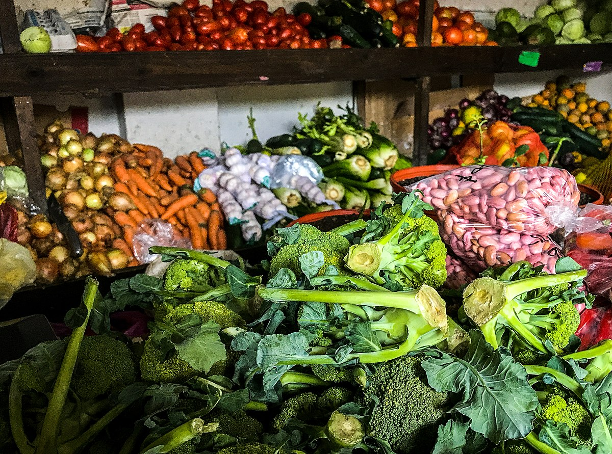
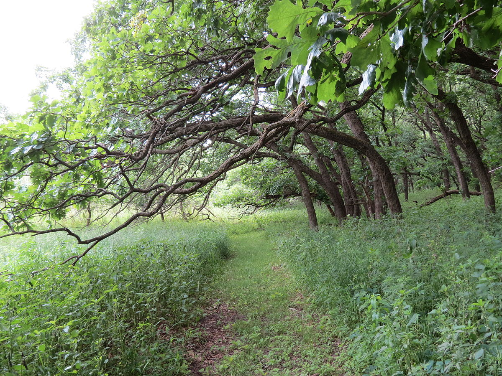
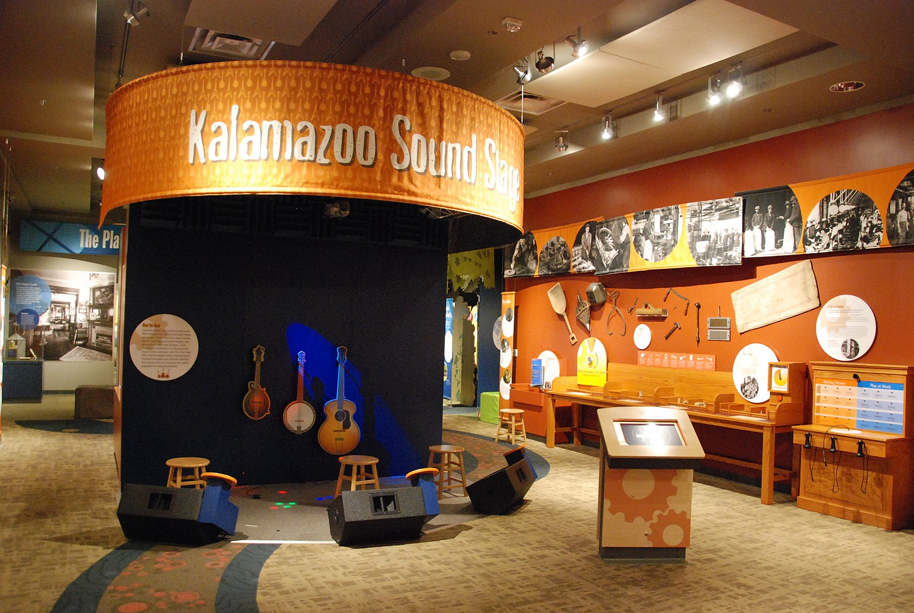

The Kalamazoo farmers' market is a reoccuring event and certainly a sight to see. Farmers from all around the area gather to sell their produce and you can find almost anything you're hoping for. There are also food trucks to appease the immedialty hungry folks that come and there are flower stands, along with craft and houseplant stand and many more.
Check out the link for Kalamazoo farmers' market schedule:
Schedule of the Kalamzoo Farmers' Market
Another popular event is the football games happening every week in Kalamazoo.
It is an exciting time to tailgate and cheer on the team you're convinced will win. Come prepared with your team's colors and a tough game face.
Check out Western University's football game schedule here to find a day that works for you:
Schedule of football games being played at Western University in Kalamazoo.
Or check out Kalamazoo College's football games here for some other options:
Schedule of football games being played at Kalamzoo College.
Kalamazoo also offers some amazing nature preserves in the area. From bogs to woodland hikes, there is a plethora of beautiful spots to visit.
Check out the link to find a list of great nature spots to go see and keep your eyes out for other beautiful spots to turn off at and explore:
List of nature preserves to see in Kalamzoo.
The Kalamazoo Valley Museum is also a great place to check out if you're hoping to learn more about the place and its history.
Check out the link to find out more about the Kalamazoo Valley Museum:
Link to Kalamazoo Valley Museum info page.
{kind=link}
{kind=link}
{kind=link}
{kind=link}
.jpg){kind=link}
{kind=link}
.jpg){kind=link}
{kind=link}